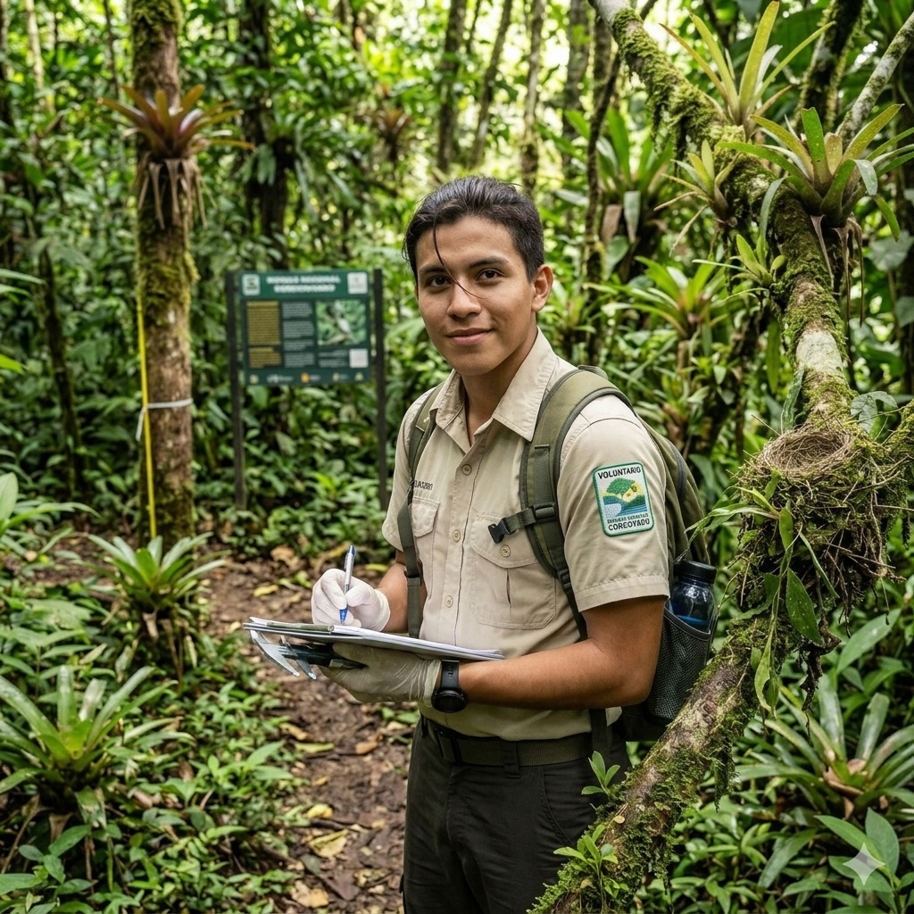
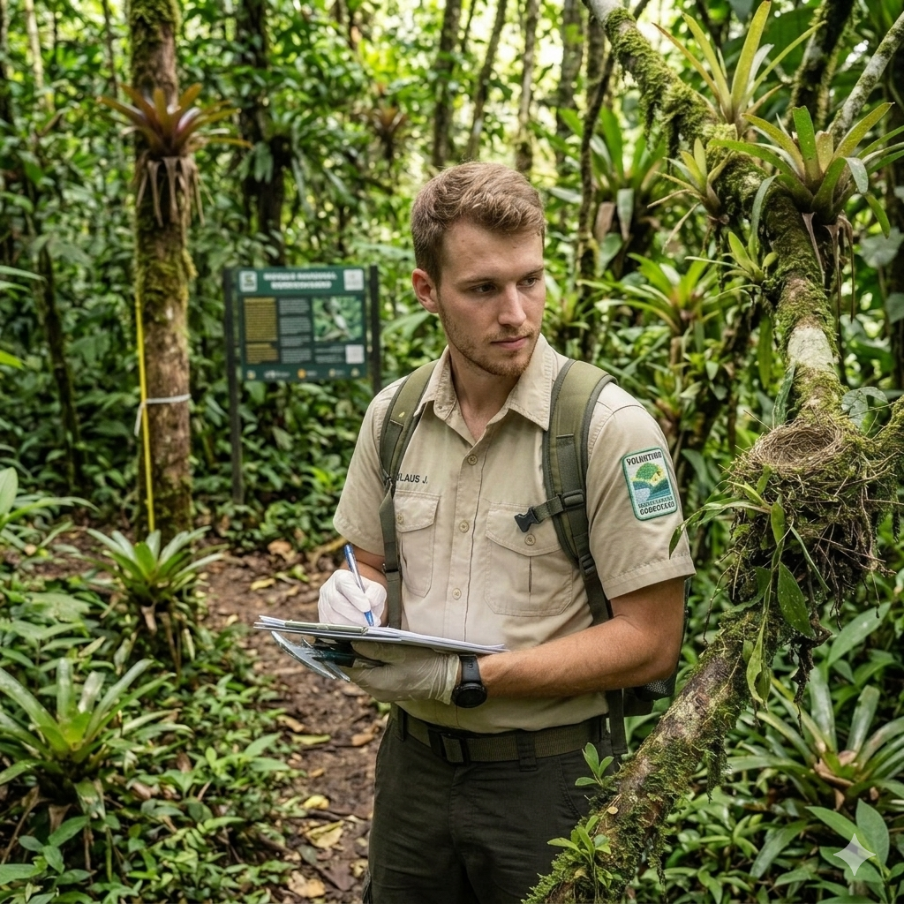
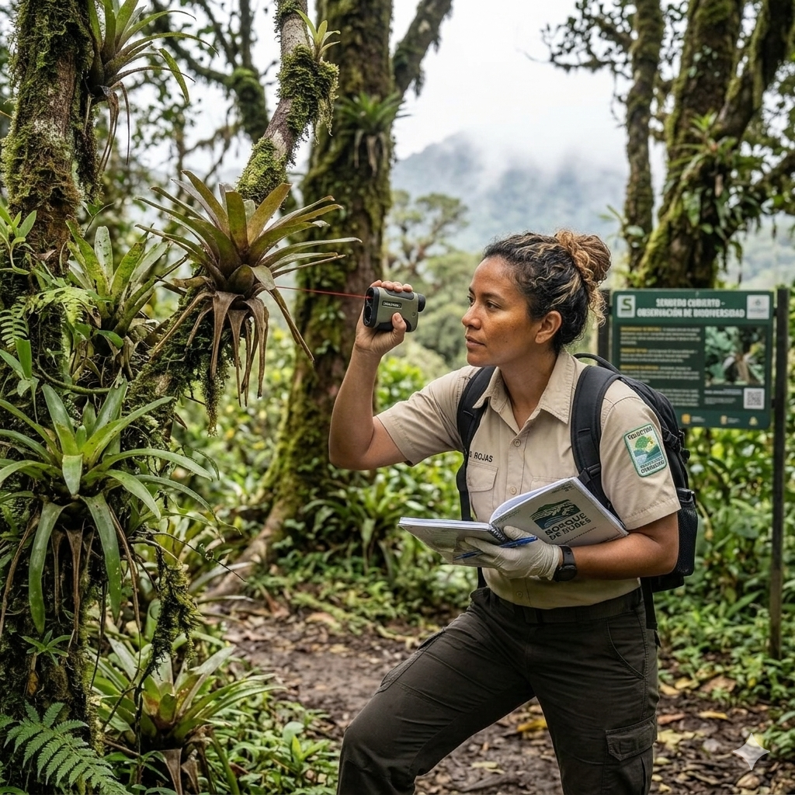

Arraigados en el territorio. Construidos para la conservación a largo plazo.
La Fundación Corcovado nació de una profunda conexión con la Península de Osa y la necesidad urgente de proteger uno de los lugares con mayor biodiversidad de la Tierra. No somos visitantes ni externos; somos parte de esta tierra, trabajando junto a las comunidades locales que han llamado a esta región su hogar durante generaciones.
Nuestro enfoque se basa en la comprensión de que la verdadera conservación no puede ocurrir sin la participación activa y el liderazgo de las personas que viven aquí. Creamos programas que empoderan a las comunidades, educan a las futuras generaciones y crean caminos sostenibles para que tanto la naturaleza como las personas prosperen juntas.
Fundación Corcovado: Construida a partir de décadas de experiencia en el campo
Cada programa que ejecutamos está informado por años de trabajo práctico en el terreno, aprendiendo de la tierra, de los científicos y, sobre todo, de las comunidades a las que servimos.
Nuestra Historia
Durante más de dos décadas, la Fundación Corcovado ha estado a la vanguardia de la conservación en el Pacífico Sur de Costa Rica. Lo que comenzó como una pequeña iniciativa para apoyar a los guardaparques se ha convertido en una organización integral que aborda los desafíos interconectados de la protección de ecosistemas, la educación ambiental y el desarrollo comunitario.
Nuestro Enfoque
Hemos aprendido que la conservación no se trata solo de proteger la tierra; se trata de construir relaciones, crear oportunidades y garantizar que las personas que viven más cerca de la naturaleza sean las principales beneficiarias de su preservación.
Nuestra Presencia
Hoy, somos la única organización con presencia permanente durante todo el año trabajando directamente dentro del Parque Nacional Corcovado y sus zonas de amortiguamiento. Esta posición única nos permite responder rápidamente a los desafíos de conservación.
Las personas detrás de la misión
Conoce a los profesionales dedicados que hacen posible nuestro trabajo cada día.

Director de Conservación
Lidera la planificación estratégica y supervisa los objetivos de conservación a largo plazo de la fundación en la Península de Osa.

Coordinadora de Educación
Diseña e implementa programas de educación ambiental en escuelas rurales y centros comunitarios.

Operaciones de Campo
Gestiona la logística en el terreno, los proyectos de restauración de ecosistemas y la coordinación de voluntarios.
Tu apoyo genera un impacto directo
Cuatro pilares, un sistema de conservación coherente.

Restauración de Ecosistemas
Conoce el programa
Conservación de Tortugas Marinas
Conoce el programa
Apoyo al Parque Nacional
Conoce el programaJuntos, podemos proteger Corcovado para las futuras generaciones
Ya sea a través de una donación, voluntariado o alianza, tu apoyo crea un impacto duradero en uno de los ecosistemas más preciados de la Tierra.